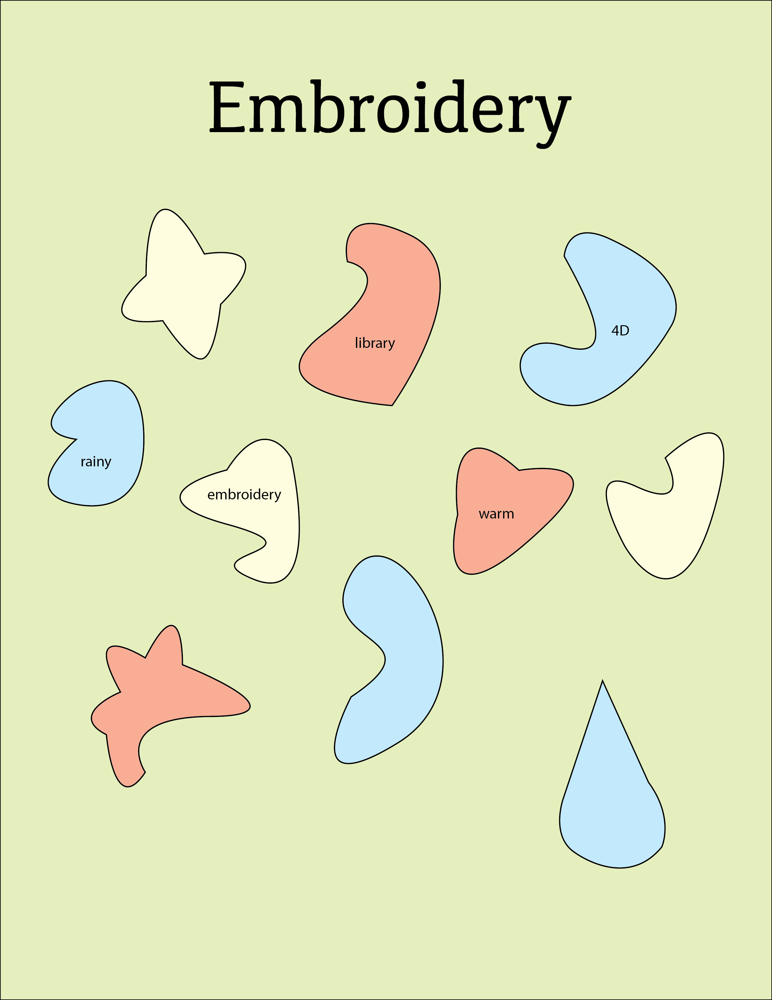

Everyone has a different day,
so the same instructions
produce a
different poster for
each person. The process is identical.
The inputs (your mood, your
words,
your sleep, what you saw) are not.
02
OTHER WORKS
Kathy’s Poster !
NYU ‘29
Steindhart Studio Art
For this design, I chose blue,
yellow, and orange to represent my
mood today. Blue
reflects the rainy
weather and the calm atmosphere of
the day. Yellow adds a sense of
brightness and optimism, while
orange represents the energy
from the coffee I got.
My five descriptive words were
library, rainy, 4D, and embroidery.
I used rounded,
organic shapes because the day felt relaxed and a little boring, with nothing particularly exciting
happening. For the required image, I included a raindrop since it was raining throughout the day and
it was one of the most noticeable things I saw while walking between Starbucks and the library.
